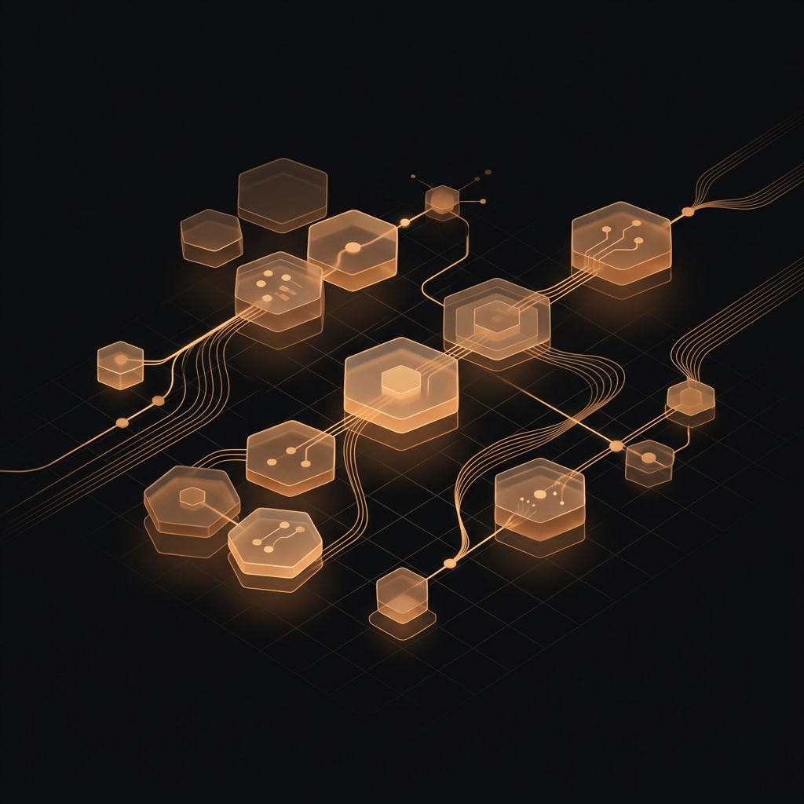

Groww AI Ops Automator
Manual weekly reporting across scattered data sources created blind spots for product teams. Built a Map-Reduce LLM pipeline that scrapes live data, generates intelligence reports, and dispatches via custom MCP server.
→ End-to-end automation with anti-hallucination KB-grounded prompting and PII compliance
View Case Study